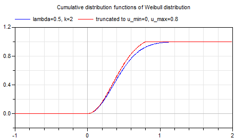
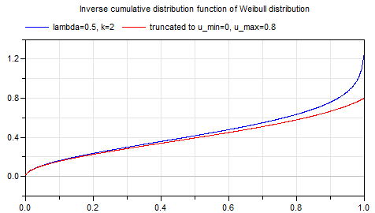

This package provides
of the truncated Weibull distribution. Examples:


For more details
of the Weibull distribution, see
Wikipedia,
of truncated distributions, see
Wikipedia.
Extends from Modelica.Icons.Package (Icon for standard packages).
| Name | Description |
|---|---|
cumulative | Cumulative distribution function of truncated Weibull distribution |
density | Density of truncated Weibull distribution |
quantile | Quantile of truncated Weibull distribution |
Weibull.density(u, u_min=0, u_max=1, lambda=1, k=1);
This function computes the probability density function according to a truncated Weibull distribution with minimum value u_min, maximum value u_max, scale parameter of original distribution lambda and shape parameter of original distribution k. Plot of the function:
For more details
of the Weibull distribution, see
Wikipedia,
of truncated distributions, see
Wikipedia.
density(0.5) // = 0.9595173756674719 density(0.5,0,0.8,0.5,2) // = 1.5948036466479143
TruncatedWeibull.cumulative, TruncatedWeibull.quantile.
Extends from Modelica.Math.Distributions.Interfaces.partialTruncatedDensity (Common interface of truncated probability density functions).
| Type | Name | Description |
|---|---|---|
Real | u | Random number over the real axis (-inf < u < inf) |
Real | u_min | Lower limit of u |
Real | u_max | Upper limit of u |
Real | lambda | Scale parameter of the Weibull distribution |
Real | k | Shape parameter of the Weibull distribution |
| Type | Name | Description |
|---|---|---|
Real | y | Density of u |
Weibull.cumulative(u, u_min=0, u_max=1, lambda=1, k=1);
This function computes the cumulative distribution function according to a truncated Weibull distribution with minimum value u_min, maximum value u_max, scale parameter of original distribution lambda and shape parameter of original distribution k. The returned value y is in the range:
0 ≤ y ≤ 1
Plot of the function:
For more details
of the Weibull distribution, see
Wikipedia,
of truncated distributions, see
Wikipedia.
cumulative(0.5) // = 0.6224593312018546 cumulative(0.5,0,0.8,0.5,2) // = 0.6850805314988328
TruncatedWeibull.density, TruncatedWeibull.quantile.
Extends from Modelica.Math.Distributions.Interfaces.partialTruncatedCumulative (Common interface of truncated cumulative distribution functions).
| Type | Name | Description |
|---|---|---|
Real | u | Value over the real axis (-inf < u < inf) |
Real | u_min | Lower limit of u |
Real | u_max | Upper limit of u |
Real | lambda | Scale parameter of the Weibull distribution |
Real | k | Shape parameter of the Weibull distribution |
| Type | Name | Description |
|---|---|---|
Real | y | Value in the range 0 <= y <= 1 |
Weibull.quantile(u, y_min=0, y_max=1, lambda=1, k=1);
This function computes the inverse cumulative distribution function (= quantile) according to a truncated Weibull distribution with minimum value u_min, maximum value u_max, scale parameter of original distribution lambda and shape parameter of original distribution k. Input argument u must be in the range:
0 ≤ u ≤ 1
Output argument y is in the range:
y_min ≤ y ≤ y_max
Plot of the function:
For more details
of the Weibull distribution, see
Wikipedia,
of truncated distributions, see
Wikipedia.
quantile(0.001) // = 0.0006323204312624211; quantile(0.5,0,1,0.5,0.9) // = 0.256951787882498
TruncatedWeibull.density, TruncatedWeibull.cumulative.
Extends from Modelica.Math.Distributions.Interfaces.partialTruncatedQuantile (Common interface of truncated quantile functions (= inverse cumulative distribution functions)).
| Type | Name | Description |
|---|---|---|
Real | u | Random number in the range 0 <= u <= 1 |
Real | y_min | Lower limit of y |
Real | y_max | Upper limit of y |
Real | lambda | Scale parameter of the Weibull distribution |
Real | k | Shape parameter of the Weibull distribution |
| Type | Name | Description |
|---|---|---|
Real | y | Random number u transformed according to the given distribution |
Generated 2018-12-12 12:14:35 EST by MapleSim.